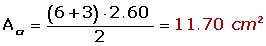
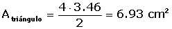

Problemas de Triángulos
1 La hipotenusa de un triángulo rectángulo mide 30 cm y la proyección de un cateto sobre ella 10.8 cm. Hallar el otro cateto.
2En un triángulo rectángulo, las proyecciones de los catetos sobre la hipotenusa miden 4 y 9 metros. Calcular la altura relativa a la hipotenusa.
3 La hipotenusa de un triángulo rectángulo mide 405.6 m y la proyección de un cateto sobre ella 60 m. Calcular:
1 Los catetos.
2 La altura relativa a la hipotenusa.
3 El área del triángulo.
4 Calcular los lados de un triángulo rectángulo sabiendo que la proyección de uno de los catetos sobre la hipotenusa es 6 cm y la altura relativa de la misma cm.
5 Una escalera de 10 m de longitud está apoyada sobre la pared. El pie de la escalera dista 6 m de la pared. ¿Qué altura alcanza la escalera sobre la pared?
6 Determinar el lado de un triángulo equilátero cuyo perímetro es igual al de un cuadrado de 12 cm de lado. ¿Serán iguales sus áreas?
7 Calcular el área de un triángulo equilátero inscrito en una circunferencia de radio 6 cm.
8 Determinar el área del cuadrado inscrito en una circunferencia de longitud 18.84 m.
9 En un cuadrado de 2 m de lado se inscribe un círculo y en este círculo un cuadrado y en este otro círculo. Hallar el área comprendida entre el último cuadrado y el último círculo.
10 El perímetro de un trapecio isósceles es de 110 m, las bases miden 40 y 30 m respectivamente. Calcular los lados no paralelos y el área.
11 Si los lados no paralelos de un trapecio isósceles se prolongan, quedaría formado un triángulo equilátero de 6 cm de lado. Sabiendo que el trapecio tiene la mitad de la altura del triángulo, calcular el área del trapecio.
12 El área de un cuadrado es 2304 cm2. Calcular el área del hexágono regular que tiene su mismo perímetro.
13 En una circunferencia de radio igual a 4 m se inscribe un cuadrado y sobre los lados de este y hacia el exterior se construyen triángulos equiláteros. Hallar el área de la estrella así formada.
14 A un hexágono regular 4 cm de lado se le inscribe una circunferencia y se le circunscribe otra. Hallar el área de la corona circular así formada.
15 En una circunferencia una cuerda de 48 cm y dista 7 cm del centro. Calcular el área del círculo.
16 Los catetos de un triángulo inscrito en una circunferencia miden 22.2 cm y 29.6 cm respectivamente. Calcular la longitud de la circunferencia y el área del círculo.
17 Calcular el lado de un triángulo equilátero inscrito en una circunferencia de 10 cm de radio.
18 Sobre un círculo de 4 cm de radio se traza un ángulo central de 60°. Hallar el área del segmento circular comprendido entre la cuerda que une los extremos de los dos radios y su arco correspondiente.
19 Dado un triángulo equilátero de 6 m de lado, hallar el área de uno de los sectores determinado por la circunferencia circunscrita y por los radios que pasan por los vértices.
20 Calcular el área de la corona circular determinada por las circunferencias inscrita y circunscrita a un cuadrado de 8 m de diagonal.
- 1
- 2
- 3
- 4
- 5
- 6
- 7
- 8
- 9
- 10
- 11
- 12
- 13
- 14
- 15
- 16
- 17
- 18
- 19
- 20
Ejercicio 1 resuelto
La hipotenusa de un triángulo rectángulo mide 30 cm y la proyección de un cateto sobre ella 10.8 cm. Hallar el otro cateto.
Ejercicio 2 resuelto
En un triángulo rectángulo, las proyecciones de los catetos sobre la hipotenusa miden 4 y 9 metros. Calcular la altura relativa a la hipotenusa.
Ejercicio 3 resuelto
La hipotenusa de un triángulo rectángulo mide 405.6 m y la proyección de un cateto sobre ella 60 m. Calcular:
Soluciones:
1 Los catetos.
2 La altura relativa a la hipotenusa.
3 El área del triángulo.
Ejercicio 4 resuelto
Calcular los lados de un triángulo rectángulo sabiendo que la proyección de uno de los catetos sobre la hipotenusa es 6 cm y la altura relativa de la misma cm.

Ejercicio 5 resuelto
Una escalera de 10 m de longitud está apoyada sobre la pared. El pie de la escalera dista 6 m de la pared. ¿Qué altura alcanza la escalera sobre la pared?

Ejercicio 6 resuelto
Determinar el lado de un triángulo equilátero cuyo perímetro es igual al de un cuadrado de 12 cm de lado. ¿Serán iguales sus áreas?
Pcuadrado = 12 · 4 = 48 cm

Ptriángulo = 48 cml = 48 : 3 = 16 cm
A = 122 = 144 m²
Ejercicio 7 resuelto
Calcular el área de un triángulo equilátero inscrito en una circunferencia de radio 6 cm.
El centro de la circunferencia es el baricentro. Por tanto:


Ejercicio 8 resuelto
Determinar el área del cuadrado inscrito en una circunferencia de longitud 18.84 m.

Ejercicio 9 resuelto
En un cuadrado de 2 m de lado se inscribe un círculo y en este círculo un cuadrado y en este otro círculo. Hallar el área comprendida entre el último cuadrado y el último círculo.


Ejercicio 10 resuelto
El perímetro de un trapecio isósceles es de 110 m, las bases miden 40 y 30 m respectivamente. Calcular los lados no paralelos y el área.

Ejercicio 11 resuelto
Si los lados no paralelos de un trapecio isósceles se prolongan, quedaría formado un triángulo equilátero de 6 cm de lado. Sabiendo que el trapecio tiene la mitad de la altura del triángulo, calcular el área del trapecio.


Ejercicio 12 resuelto
El área de un cuadrado es 2304 cm2. Calcular el área del hexágono regular que tiene su mismo perímetro.


>


Ejercicio 13 resuelto
En una circunferencia de radio igual a 4 m se inscribe un cuadrado y sobre los lados de este y hacia el exterior se construyen triángulos equiláteros. Hallar el área de la estrella así formada.


Ejercicio 14 resuelto
A un hexágono regular 4 cm de lado se le inscribe una circunferencia y se le circunscribe otra. Hallar el área de la corona circular así formada.


Ejercicio 15 resuelto
En una circunferencia una cuerda de 48 cm y dista 7 cm del centro. Calcular el área del círculo.

Ejercicio 16 resuelto
Los catetos de un triángulo inscrito en una circunferencia miden 22.2 cm y 29.6 cm respectivamente. Calcular la longitud de la circunferencia y el área del círculo.
Ejercicio 17 resuelto
Calcular el lado de un triángulo equilátero inscrito en una circunferencia de 10 cm de radio.

Ejercicio 18 resuelto
Sobre un círculo de 4 cm de radio se traza un ángulo central de 60°. Hallar el área del segmento circular comprendido entre la cuerda que une los extremos de los dos radios y su arco correspondiente.


Ejercicio 19 resuelto
Dado un triángulo equilátero de 6 m de lado, hallar el área de uno de los sectores determinado por la circunferencia circunscrita y por los radios que pasan por los vértices.


Ejercicio 20 resuelto
Calcular el área de la corona circular determinada por las circunferencias inscrita y circunscrita a un cuadrado de 8 m de diagonal.

 Ejercicios
Ejercicios